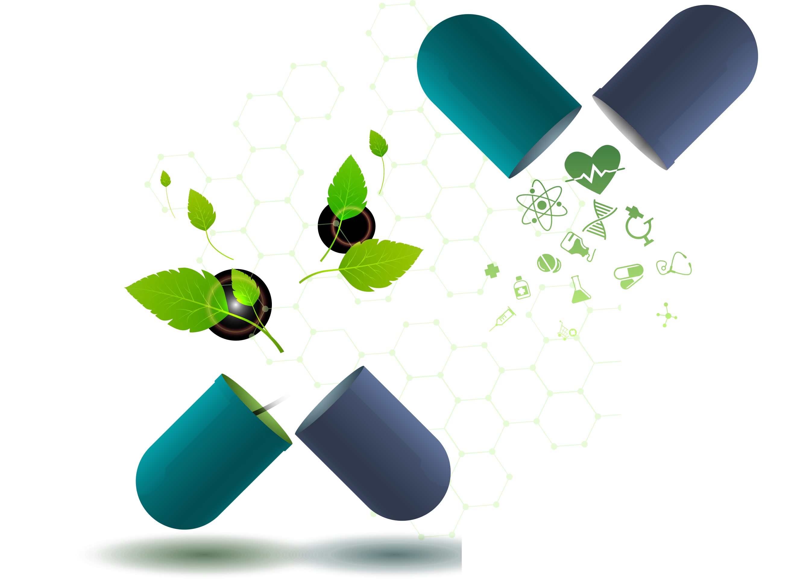
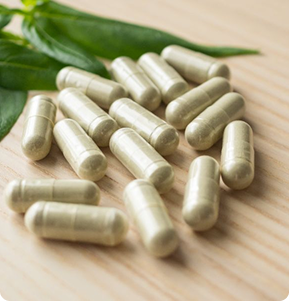
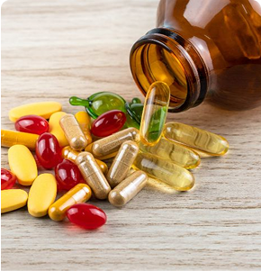

Our comprehensive pharmaceutical solutions are designed to support every step of healthcare delivery. From strategic planning to operational execution, we integrate innovative research, advanced technologies, and precise processes to ensure efficiency, compliance, and improved outcomes for patients and communities.
Driven by research and guided by compassion, we provide pharmaceutical solutions that empower individuals and communities to lead healthier lives. Precision and integrity define our approach.

At our pharmacy, we believe that taking care of your health should never be a hassle. Whether you’re managing a chronic condition or just looking for ways to improve your wellness, we’re here to help every step of the way.
Every breakthrough begins with dedication, insight, and resilience. At
BPharma, we turn research into
solutions, striving to improve lives with
every step.


Redefining Possibilities
If you still have questions, our team is just one click away. We've got you.